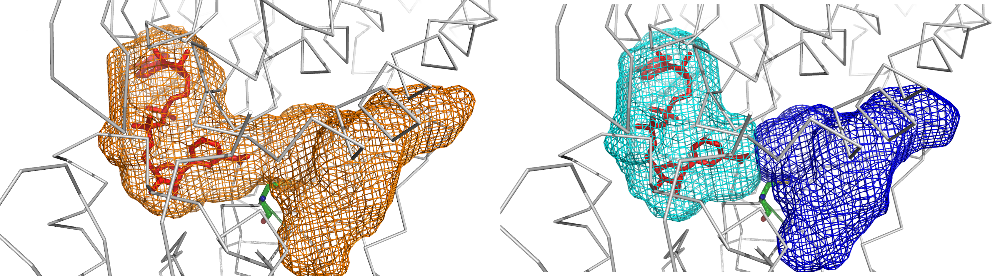

<!-- parKVFinder-web server homepage -->
<!DOCTYPE html>

<html lang="en-US">
    <head>
        <meta charset="UTF-8" />
        <meta name="viewport" content="width=device-width, initial-scale=1.0" />
        <meta name="author" content="João Victor Guerra">
        <meta name="description" content="This is the parKVFinder-web server at CNPEM homepage.">
        
        <link rel="shortcut icon" href="icon.ico" type="image/x-icon">
        <link rel="stylesheet" href="stylesheet.css"> 

        <title>parKVFinder-web homepage</title>
    </head>
</html>

<body>
    <div class="center">

        <h1>Welcome to parKVFinder-web server at CNPEM homepage!</h1>

        <p></p>
        
        <p>This page is built to help you with our cavity detection and characterization web service.</p>

        <h2>parKVFinder-web server</h2>
        <p>Most parKVFinder functionality is available through our internal web server (parKVFinder-web server), located at CNPEM. Thus, to use this web service, users <strong>must</strong> be in CNPEM's internal network.</p>
        <p>The parKVFinder-web server provides a simple way to run parKVFinder with a PyMOL v2 plugin, named <strong>PyMOL parKVFinder-web Tools</strong>, that handles jobs submission and requisition. To install this plugin, please refer to our group's GitLab <a href="https://gitlab.cnpem.br/LBC-LNBio/PyMOL-parKVFinder-web-Tools">repository</a>.</p>

        Any issues, bugs and/or feature requests can be send <a href=https://gitlab.cnpem.br/LBC-LNBio/PyMOL-parKVFinder-web-Tools/issues>here</a>.

        <h3>Jobs availability</h3>
        <p>Jobs sent to parKVFinder-web server are available on the server up to 1 day after completion.</p>

        <h2>parKVFinder local version</h2>
        <p>Alternatively, it is also possible to install parKVFinder locally. For more information on the local version, please refer to these repository: <a href="https://github.com/LBC-LNBio/parKVFinder">parKVFinder</a> or <a href="https://github.com/LBC-LNBio/parKVFinder-win">parKVFinder-win</a>.</p>

        <h2>Development team</h2>
        <p>parKVFinder, parKVFinder-web server and PyMOL parKVFinder-web Tools was developed by:</p>
        <ul>
            <li>João Victor da Silva Guerra</li>
            <li>Helder Veras Filho</li>
            <li>Leandro Oliveira Bortot</li>
            <li>Rodrigo Vargas Honorato</li>
            <li>José Geraldo de Carvalho Pereira</li>
            <li>Paulo Sergio Lopes de Oliveira (<a href=mailto:paulo.oliveira@lnbio.cnpem.br>paulo.oliveira@lnbio.cnpem.br</a>)</li>
        </ul>
        <p>Computational Biology Laboratory - LBC</p>
        <p>Brazilian Biosciences National Laboratory - LNBio</p>
        <p>Brazilian Center for Research in Energy and Materials - CNPEM</p>
        
        <h2>Citation</h2>    
        <p>If using parKVFinder-web in a publication, please refer and cite the parKVFinder paper:</p>
        <p>João Victor da Silva Guerra, Helder Veras Ribeiro Filho, Leandro Oliveira Bortot, Rodrigo Vargas Honorato, José Geraldo de Carvalho Pereira, Paulo Sergio Lopes de Oliveira, ParKVFinder: A thread-level parallel approach in biomolecular cavity detection, SoftwareX, 2020, <a href="https://doi.org/10.1016/j.softx.2020.100606">https://doi.org/10.1016/j.softx.2020.100606</a></p>
        <hr />
    </div>
</body>
